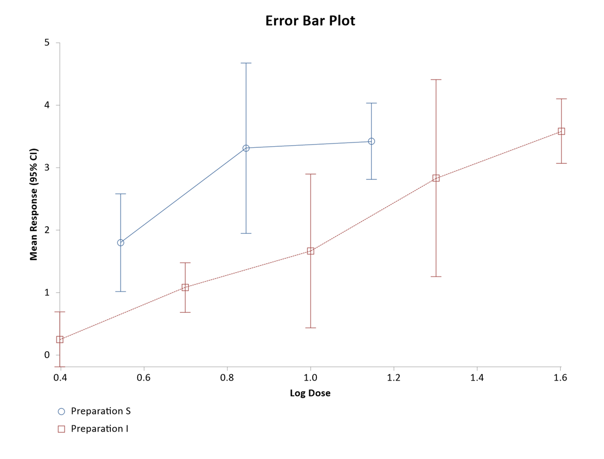

Error Bar Plot
Menu location: Graphics_Error Bar.
The high-low-close plots of business graphics packages can be difficult to manipulate if you have to display more than one series, StatsDirect provides this function as a more convenient way to prepare error bar plots. You can use up to ten series for which you must provide four variables for each series; the X data, the Y data, the upper error bar for Y and the lower error bar for Y. The error function can be, for example, the standard error of the mean for each Y when each Y point represents the mean of repeated observations. In this case the error bars are symmetrical. You can generate workbook columns for upper and lower error bars using apply function. Different series are represented by different marker styles and you can opt to show joining lines between the markers.

Example
Test workbook (Graphics worksheet: Weeks since conception, Mean Urate (mmol/l), SD Urate (mmol/l), Mean-SD, Mean+SD).
The Graphics worksheet of the test workbook holds the mean urate concentration (mmol/l) at ten times from 0 to 50 weeks since conception, with the standard deviation of the individual values at each time. The columns Mean-SD and Mean+SD, made with apply function from the mean and standard deviation columns, hold the lower and upper ends of a bar of one standard deviation either side of each mean.
To draw this plot in StatsDirect open the test workbook using the file open function of the file menu. Then select Error Bar from the Graphics menu. Enter 1 as the number of series, then select the column marked "Mean Urate (mmol/l)" for the Y axis, "Weeks since conception" for the X axis, "Mean+SD" for the upper error bar and "Mean-SD" for the lower error bar.
For this example:
The chart plots a hollow marker at each mean and a vertical bar, with a short line across each end, from Mean-SD to Mean+SD: at conception the mean of 0.246 mmol/l carries a bar from 0.187 to 0.305. The X axis is titled Weeks since conception and the Y axis Mean Urate (mmol/l), and the axes take in the whole of every bar. The mean falls to 0.173 mmol/l at 12 weeks (bar 0.126 to 0.220) and rises to 0.275 mmol/l at 50 weeks (bar 0.218 to 0.332).
The bars of one standard deviation show the spread of individual values around each mean, which is wide in comparison with the changes in the mean over the series. The chart options can join the markers of a series with lines, as in the figure above, which shows two series with confidence intervals as the error bars and a legend naming them.
 R code
R code
This R code reproduces the illustration above. It needs no packages and was checked with R 4.6.1. Paste it into R, or save it as a script and run it.
# Error bar plot: the StatsDirect help illustration (mean urate, mmol/l, with one
# standard deviation either side, at ten times since conception; the test
# workbook's Graphics worksheet columns Weeks since conception, Mean Urate (mmol/l),
# SD Urate (mmol/l), Mean-SD and Mean+SD) in R
weeks <- c(0, 4, 8, 12, 16, 24, 32, 36, 38, 50)
urate <- c(0.246, 0.240, 0.190, 0.173, 0.189, 0.196, 0.216, 0.232, 0.269, 0.275)
sd_urate <- c(0.059, 0.044, 0.070, 0.047, 0.048, 0.040, 0.053, 0.056, 0.056, 0.057)
# The ends of the bars, one standard deviation below and above each mean: the
# workbook's Mean-SD and Mean+SD columns hold these, made from the mean and sd
# columns with apply function. Any error function can be used in their place, for
# example the standard error or the confidence limits of each mean.
lower <- urate - sd_urate
upper <- urate + sd_urate
# StatsDirect draws a hollow marker at each mean and a vertical bar from the lower
# to the upper value with a short line across each end, on axes that take in the
# whole of every bar and carry the column titles. Base R has no error bar function:
# arrows() with a 90 degree head at both ends draws the same bars (a bar of zero
# length would be skipped with a warning).
plot(weeks, urate, pch = 1, ylim = range(lower, urate, upper), bty = "l",
xlab = "Weeks since conception", ylab = "Mean Urate (mmol/l)",
main = "Error bar plot")
arrows(weeks, lower, weeks, upper, angle = 90, code = 3, length = 0.05)
# The chart options can join the markers with lines, as lines(weeks, urate) would.
# The values plotted
cat("Weeks since conception Mean Urate (mmol/l) Bar (mean - sd to mean + sd)\n")
for (i in seq_along(weeks)) {
cat(sprintf("%-24d %-21.3f %.3f to %.3f\n", weeks[i], urate[i], lower[i], upper[i]))
}